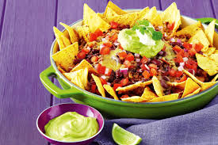

ÍNDICE
- Ingredientes
- Paso a Paso
- Resultado Final
Ingredientes
Nachos
Guacamole
Queso
Frijoles
Jalapeños
Paso a Paso
- Cogemos los nachos los ponemos en un plato le echamos el queso para gratinar y lo metemos al horno hasta que veamos que el queso esta fundido a nuestro gusto.
- Mientra slos nachos se hacen cogemos los frijoles y los echamos en una sarten junto a un poco de pimiento cortado y lo sazonamos y cocinamos, mientras se hacen los frijoles vamos cortando los jalapeños.
- Una vez esten echo los nachos cogemos los frijoles y los echamos encima de los nachos junto a los jalapeños y el guacamole.
Resultado Final
